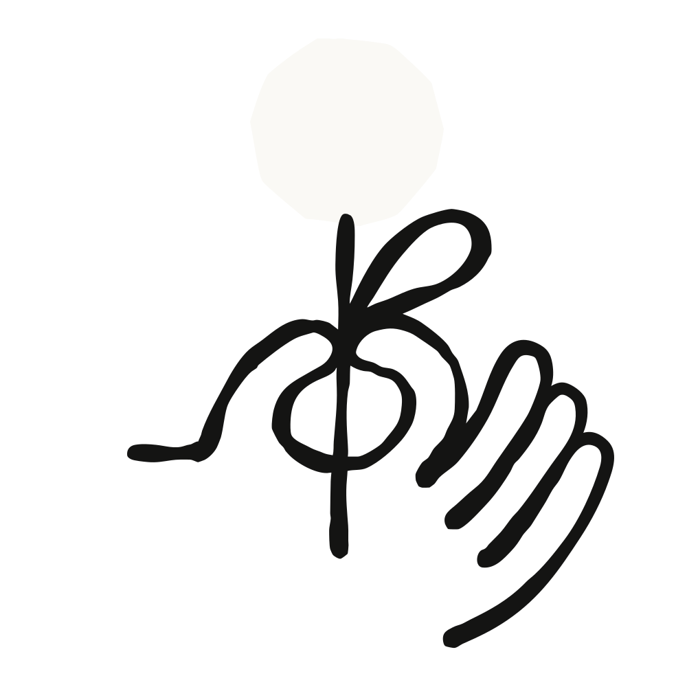

Anthropic의 프로덕트 디자이너 네이트 패럿(Nate Parrott)이 베타 단계인 Claude Design을 사용해 제품 프로토타입부터 슬라이드 덱, 애니메이션까지 시각적 아이디어를 이른 단계에서 탐색하고 다듬고 공유하는 방법을 소개한다.
2025년 가을, 나는 Claude Code for VS Code를 담당하는 유일한 프로덕트 디자이너로서 엔지니어 두 명과 함께 Claude Code가 하는 모든 일을 터미널 밖의 친숙한 인터페이스로 다시 그려내는 작업을 하고 있었다. 우리는 9월 말에 베타를 출시했고, 11월에 Opus 4.5가 나오면서 Claude Code 팀은 빠르고 공격적으로 기능을 쏟아내기 시작했다. 엔지니어들의 출시 속도는 예전보다 훨씬 빨라졌지만, 나는 여전히 늘 해오던 속도로 결과물을 내고 있었다. 따라잡을 방법이 필요했다.
Claude Code는 텍스트 기반의 터미널에서 돌아가고, 나의 첫 시도도 그런 식이었다. 출력 내용을 Claude에 복사해 넣고 스크린샷을 첨부한 뒤 "이런 기능을 추가하려고 하는데, 네가 디자인해 볼래?"라고 물었다. 결과는 좋지 않았다. 한 달 정도 사이드 프로젝트로 Claude의 디자인 결과물을 개선할 방법을 계속 찾아다녔다.
결국 답을 우연히 발견했다. Claude는 HTML을 정말 잘 다룬다는 것이다. 우리는 HTML을 웹사이트를 위한 포맷으로 생각하지만, 사실 HTML은 풍부하고 인터랙티브한 시각 매체이기도 하다. 슬라이드 덱이나 영상 파일, PDF로 만들 수 있는 것이라면 무엇이든 웹페이지로도 만들 수 있다. 그래서 나는 Claude에게 HTML을 만들도록 프롬프트를 짰고, 왼쪽에서 채팅하고 오른쪽에서 결과물을 보는 분할 화면 인터페이스를 만들어 주었다.
그것만으로도 쓸 만했지만, 프로덕트 디자인은 자신이 맡은 제품과 브랜드에 대한 지식을 적용하는 작업이다. 그래서 다음 단계로 Anthropic 브랜드의 핵심(우리 제품이 쓰는 폰트, 색상, 에셋, 원칙)을 프롬프트로 응축하는 데 시간을 들였다. 이렇게 해두면 도구에 프롬프트를 입력했을 때 결과물이 Anthropic 브랜드 가이드를 따르게 된다.
이 모든 것을 작은 사내 프로토타입에 담아 팀에 공유했다. 프로덕트 디자이너들은 곧바로 이걸 인터랙티브 프로토타입 제작에 활용하기 시작했다. 기존 디자인 도구로 클릭스루 프로토타입을 만들려면 화면마다 모든 상태를 목업하고 손으로 하나하나 연결해야 한다. 여기서는 Claude에게 에셋을 건네고 "작동하게 만들어줘"라고 말하면 된다. 결과물마다 문서를 공유하듯 공유할 수 있는 링크가 딸려 나온다.
Claude Design이 얼마나 강력한지 처음 실감한 건 Anthropic Labs 팀 오프사이트에서 열린 아이디어 피칭 세션이었다. 그 자리에 있던 모두가 이 도구로 슬라이드를 뚝딱 만들었고, 종종 발표 순서가 오기 직전 회의 중간에 만들기도 했다. 그 세션을 계기로 Labs 팀은 여기에 인력을 배치하기로 했고, Claude Design은 사이드 프로젝트에서 정식 프로젝트가 됐다.
우리는 이 도구를 더 이상 제품 목업용 도구로만 설명하지 않게 됐다. Claude Design은 슬라이드 덱, 랜딩 페이지, PDF로 인쇄하는 원페이지 문서, 이메일, 애니메이션, 소셜 미디어에 공유할 비주얼 등 온갖 종류의 시각 커뮤니케이션을 만드는 도구가 됐다. 나는 이걸 프로덕트 디자인보다 한 단계 위에 있는 것으로 생각한다. 주된 목적이 소통과 아이디어 발상인 비주얼을 두고 Claude와 협업하는 것이다.
모델의 비전 능력이 좋아질수록 Claude Design이 해낼 수 있는 작업의 범위와 품질도 함께 좋아진다. 우리의 최신 Opus급 모델인 Claude Opus 5는 이전 Opus 모델들보다 차트, 다이어그램, 스크린샷을 더 잘 읽어내며, Claude Design과 함께 쓰면 발표 수준의 덱과 메모를 만드는 데 강력한 힘을 발휘한다.
Claude Design에는 이미지 생성 모델이 없고 이미지 생성을 위해 만들어진 도구도 아니다. 그래서 로고 디자인에는 잘 맞지 않는다. 물론 그렇다고 사람들이 시도하지 않는 건 아니지만 말이다. 여기서는 이미 갖고 있는 로고와 에셋을 가져오는 편이 더 낫다. 이 제품의 나머지 부분도 같은 방식으로 작동한다. Claude는 빈 캔버스를 마주하고 막막해하지 않도록 여러 옵션과 출발점을 만들어 주고, 어떤 게 좋은지, 혹은 여러 버전을 어떻게 조합할지는 사람이 선택한다.
그리고 프로덕션 소프트웨어를 실제로 출시하는 작업이라면 Claude Code를 쓰는 게 맞다. Claude Code는 코딩을 위한 것이고, Claude Design은 디자인 작업의 다른 부분, 즉 초기 아이디어 발상, 협업, 혹은 누구도 아직 만들겠다고 확정하지 않은 방향에 대한 공감대를 만드는 일을 위한 것이다. 둘은 왕복하며 함께 작동한다. Claude Code에서 시작한 프로토타입을 Claude Design으로 동기화해 캔버스에서 반복 작업하고 편집할 수도 있고, Claude Design에서 만들 준비가 끝난 프로토타입을 Claude Code로 넘길 수도 있다. 모델이 프로덕션 소프트웨어를 만드는 데 점점 더 능숙해질수록, 정말 중요한 작업은 그 앞 단계로 옮겨간다. 좋은 아이디어를 갖는 것, 모두를 한 방향으로 정렬시키는 것, 아이디어가 아직 초기 단계일 때 피드백을 모으는 것이다.
나는 이른바 '일상적인' 디자인 작업, 그러니까 초기 아이디어를 와이어프레임으로 그리거나 어떤 플로우의 버전을 15개쯤 만들어 동료들 피드백을 모으는 일에 Claude Design을 매일 쓴다. 최근 내 작업에서 나온 몇 가지 예를 소개한다.
모든 디자이너가 한 번쯤 봐야 할 브렛 빅터(Bret Victor)의 강연이 있다. 제목은 "Stop Drawing Dead Fish"다. 소개 문구를 옮기면 이렇다. "우리가 그리는 모든 것은 기본적으로 살아 움직여야 한다."
Claude Design이든 다른 어떤 도구든, 디자이너들이 자신의 창작물을 어떻게 살아 움직이게 만들지 고민해보길 권한다. 내가 가장 좋아하는 Claude Design 결과물은 기존의 틀에 들어맞지 않는 것들이다. 인터랙티브 시뮬레이션이 들어간 문서, 사용자에게 말을 거는 슬라이드 덱, 동시에 영상이기도 한 다이어그램, 그 자체가 에디터이기도 한 디자인 같은 것들. 코드, 그중에서도 특히 HTML은 놀라운 창작의 매체이며, 이제야 비로소 디자이너들이 이를 활용해 무언가를 만드는 일이 어느 정도 쉬워졌다.
Claude Design이 지금의 모습을 갖추게 된 건 Anthropic 안의 사람들이 내가 미처 계획하지 못했던 용도를 계속 찾아냈기 때문이다. 지금은 Claude Pro, Max, Team, Enterprise 플랜에서 베타로 이용할 수 있다. 한번 써보고, 우리도 아직 생각해보지 못한 곳으로 이 도구를 데려가 보길 바란다.
이 글은 Anthropic의 프로덕트 디자이너인 네이트 패럿이 작성했으며, Claude Design에 대한 그의 개인적인 의견과 사용 경험, 조언을 담고 있다.
Claude Design 인트로 애니메이션
지하철 시간표 앱 녹화 영상
인스타그램 스타일 UI 테마 편집
Claude Design 자체의 리디자인 작업